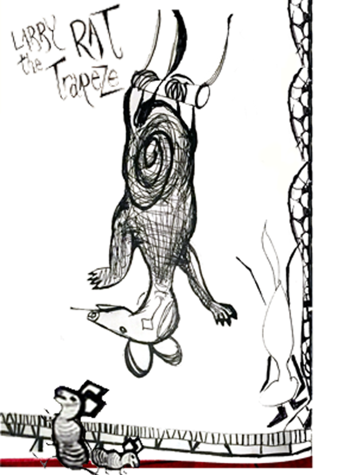
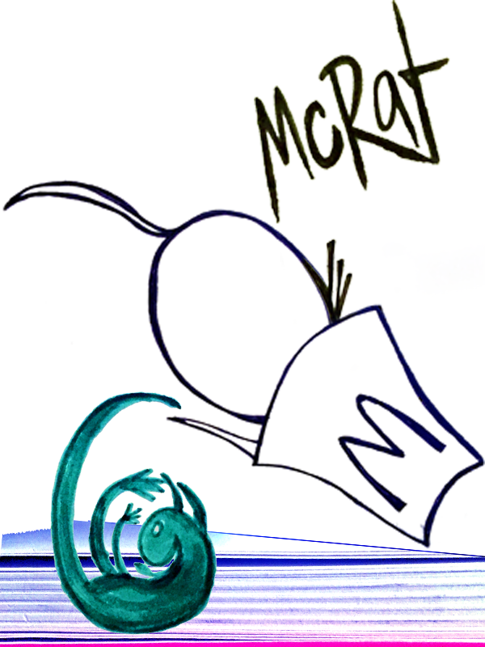
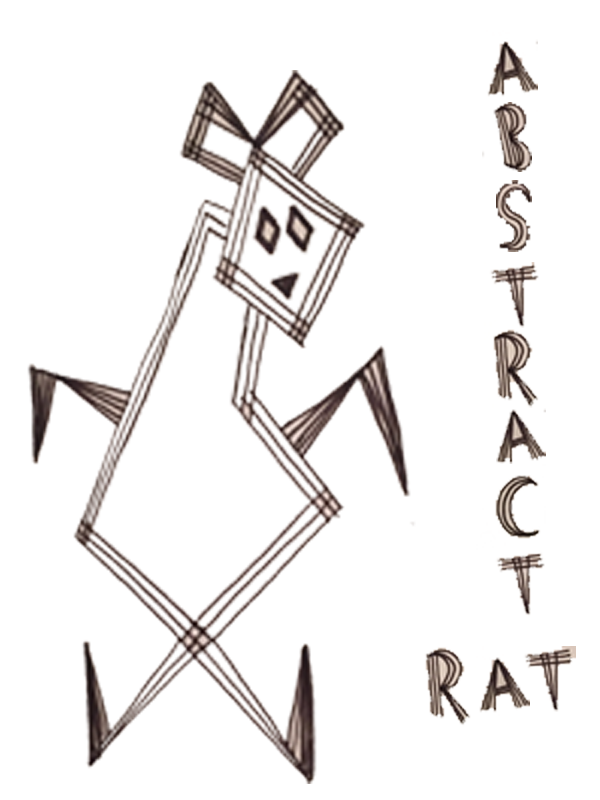
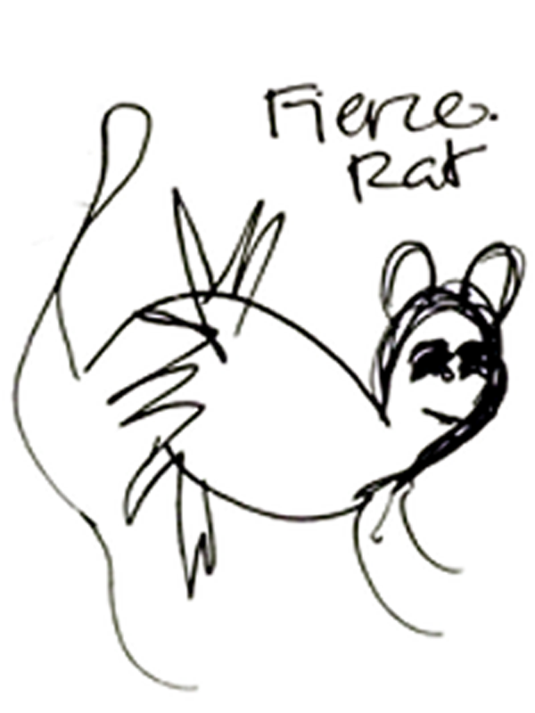
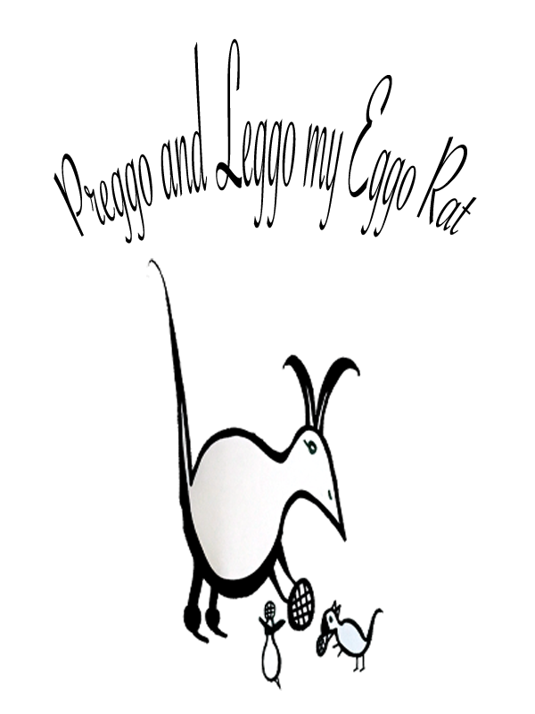
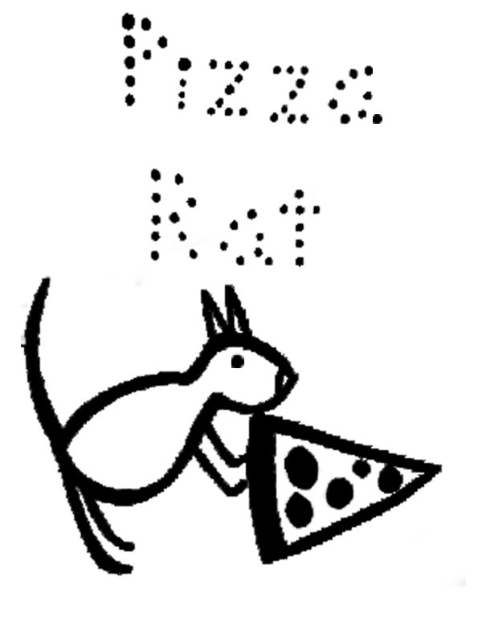

Larry the Trapeze Rat
Larry was one of the first rats documented. He was seen near Lincoln Square. He likes to hop and jump around on the tracks. The best trick he has is jumping from off the middle rail and dissapearing between tracks. Weight from his thick pink tail provides balance for aerial maneuvers.

McRat
McRat was found in a discarded McDonalds french fry container on the tracks of a subway. McRat tried to camouflage, as he was literally inside the whole container and only his tail was sticking out like another french fry. He wanted to find a fry; he succeeded at getting his nose covered in french fry salt and pulled out a fry the size of his face.

Abstract Rat
Abstract rat is abstracted both metaphorically and visually. Inspiration for this rat comes from a plastic bag rat illusion. Said rat was only somewhat seen in a plastic bag - an outline of his bony body was visible to human eyes. This rat provokes the question if a rat was "really there" if it was not seen for sure.

Fierce Rat
Fierce Rat is a serious partay rat who lives in Times Square. He was seen near an empty bottle of Smirnoff. His party options are limitless with the N, Q , R, S, 1, 2, 3,and 7 trains all at paw. He is an intense partier because he swims in a pool of vodka as the pregame to his parties near times square.

Preggo Rat
A family of rats that live at the Lex and 59th street station. Scurry and Furry are sister rats! Scurry chases Furry away from oncoming trains train when Furry gets distracted. Furry has a habit of by reading papers (especially comic sections) fallen on the tracks, but will race with Scurry when Scurry races her.

Pizza Rat
Pizza rat is one of the few rats to ever go viral! He was filmed by a tourist in Union Square while trying to get pizza for his rat family. It wasn't his fault the pizza was larger than him. He struggled the slice downstairs, but eventually succeeded!

{kind=link}
{kind=link}
{kind=link}
{kind=link}
{kind=link}
{kind=link}